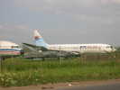
Brie, ce n'est pas trop loin de chez moi, heureusement. Mais il faut contourner Paris ! Invité par les Pirates, mon GPS me dit que l'A6 est encombrée, je prends la N7... Mauvais choix, je mettrai deux heures et demie, au pas après Orly sur 7 km... J'en profite pour regarder les avions exposés au Parc du Musée Athis-Paray-Aviation, au sud d'Orly : Dans l'ordre, une Caravelle (280 construites, premier vol en 57, une finesse de planeur : 22 !). Puis un Mirage III RD sur lequel je n'ai pas volé, moi, c'était le M III R... Un Mirage III B (biplace), un Mercure, une rareté, le seul avion de ligne construit par Dassault (11 exemplaires !).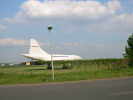
Et puis un Concorde, le 02, de présérie donc (les protos sont les 001 et 002) qui a quand même pas mal volé : 610 heures, dont 288 en supersonique !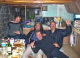
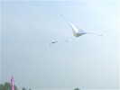
Samedi matin sur le terrain de bonne heure, après le bon petit-déjeuner offert à l'hôtel... Michel Chantren fait voler sa raie Manta qui me rappelle quelque chose...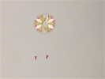
Il a aussi ce joli cerf-volant rond, original et bien construit...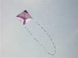
Et aussi ce carré, toujours dans les mêmes tons discrets...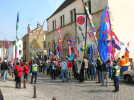
Traditionnellement, c'est la parade dans les rues de Brie, derrière la fanfare de la Banda Larrachos ! Un raccourci mène du Parc au centre ville. Là, c'est nouveau, petit arrêt apéritif dans le vieil Hôtel-Dieu rénové, qui abrite aussi une expo photo sur le patrimoine urbain de Brie.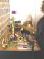
Les musiciens ont posé leurs instruments, ils ont encore plus besoin que nous de se désaltérer ! Dehors, un vestiaire porte-bannières en bambou a été dressé, ç'a été bien pratique et joli !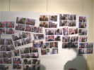
Belle idée, des photographies des participants, cervolistes ou exposants et spectateurs ont été prises et exposées dans la foulée... Mais ça manquait un peu de lumière pour mon petit Nikon (j'ai cassé l'écran de mon Ixus...).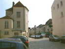
Retour au terrain par la voie inverse, après un petit tour sur les vieilles places et près du château...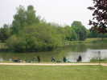
On rentre dans le parc, où des pêcheurs chassent le poisson du lac avec de gros lance-pierres rouges...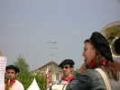
Sur son élan, la Banda nous offre encore un petit concert entraînant avant le déjeuner !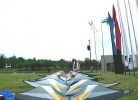
Un petit tour de terrain avant de me relancer, les Air-One ont préparé une belle brochette de cerfs-volants...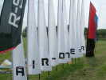
Ils ont aussi une brochette de bannières, à leur nom et à celui d' R-Sky...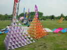
Plus loin, une belle paire de Bell, très décoratifs, mais il faut pas mal de vent et on ne les verra pas beaucoup en l'air !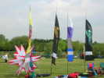
Voilà encore une belle étoile rouge et blanche de bonne taille, présentée avec les bannières du DrachenClub der Baar...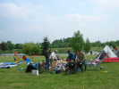
Plus loin, on n'a pas déjeuné avec tout le monde, mais ça n'a pas l'air d'être la pénurie...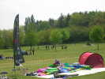
Venus de Hollande, les Sky-Fliers, eux, sont plus sérieux, que du matériel sur leur bâche, et un beau tas !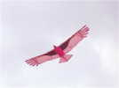
Mon tour de terrain est fini, je sors le Condor que j'avais un peu retapé cette semaine. Il vole bien, mais il se fera casser plus tard par un gros. Je réparerai, mais je le casserai moi-même encore dimanche en le montant pour voir si ma réparation était correcte...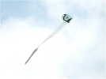
Emmanuel Duba a bien sûr planté ses Jardins de chats, avec son chat-devinette, mais aussi des cerfs-volants chats comme celui-ci, délicat et harmonieux !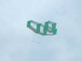
Une rareté, un cellulaire que je trouve d'aspect agréable, le Pormortchef, qui est très bien tendu et d'une grande stabilité ...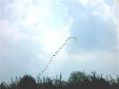
Sur le terrain du haut, les pieuvres, raies et autres gros animaux, de Sylvain Goeury en particulier, et ce train d'oiseaux de Borneo.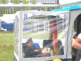
En bas, la célèbre remorque des Hurricane, qui ne sert pas qu'à transporter le matériel mais dispose aussi d'une confortable véranda bien abritée !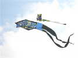
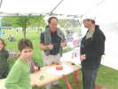
La FFVL est présente sur le terrain du haut, avec un barnum atelier de cerfs-volants pour enfants, des petits Sleds ou des Eddies qui volent bien, avec peu de vent ou avec beaucoup !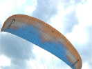
Ils ont aussi amené des démonstrateurs initiateurs de... Vol Libre, qui lèvent des voiles énormes malgré un vent limité... Il doit falloir être baraqué pour lever ça !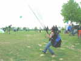
Eh bien pas du tout, la démonstratrice est plutôt menue, malgré le sac-harnais énorme qui cache sa sveltesse !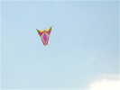
Sur le terrain du bas, ce grand (3 m ?) cerf-volant original et très léger qui volera bien, même dans les conditions turbulentes du moment !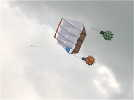
Là, c'est plus complexe, avec ce quatre-mâts lesté de masses d'armes (ou de mines à cornes ?) !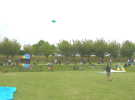
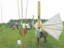
Côté Jardins, les classiques sont là, les instruments de musique de Bruno Tondellier, les bouteilles découpées de Jean-Claude Anquier, les jardins des Ghesquière et des Guilbert, et encore d'autres !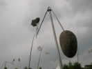
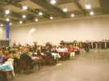
Soirée à la Salle Safran comme d'habitude... Michel Chantren vole au dessus des convives avec son Révo (faut de la précision et de la sûreté), puis avec son requin...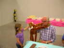
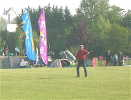
Dimanche matin, petit-déjeuner de... 7 h à 8 h, c'est inhumain ! Bon, en fait le plus gros de la troupe arrivera vers 08h15, mais c'est encore bien tôt !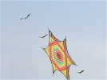
On verra de beaux flocons plats, je ne sais pas si on leur donne un nom particulier !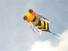
Chez les Impossible, Didier sort sa guêpe de 2 m, Dédé sort la sienne de 4 m mais en vol, c'est comme pour mes oiseaux, on est déçu par le peu de différence visuelle...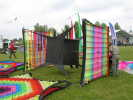
Chez les constructeurs de flocons, on voit se monter ce monstre hybride qui allie la technique flocon et une sorte de X-box. C'est du solide, armature métal qui ne touche pas la toile mais la tend, un peu comme pour les Madiot...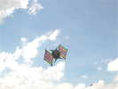
Un petit coup de vent, et hop, ça s'envole sans hésitation ni ondulation...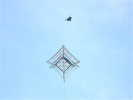
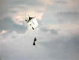
Et voici un gros moulin-à-vent, dont les ailes tournent, bien sûr ! Don Quichotte et Sancho Pança l'attaquent, tellement il est réel !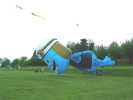
Froggy s'est beaucoup gonflé, mais cette fois, il décolle vraiment, pour la plus grande joie des enfants !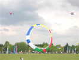
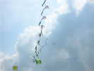
André Rochebois quand il ne fait pas tourner le team Impossible, lance encore un train... olympique, avec le petit bonhomme emblèmatique de ceux-ci ...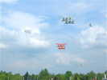
Le CVCF, et en particulier le club de Vaux-Le-Penil, a organisé un envol collectif de ses réalisations : chacun a construit un très beau Saconney, un vrai, sur les plans du Musée de l'Air, juste un peu plus petit, et en cannes à pêche assemblées...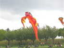
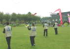
C'est reparti pour les Impossible, un petit échauffement et la routine complète, en essayant d'éviter les monofils et autres occupants de l'espace !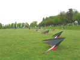
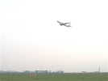